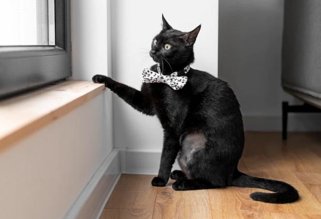
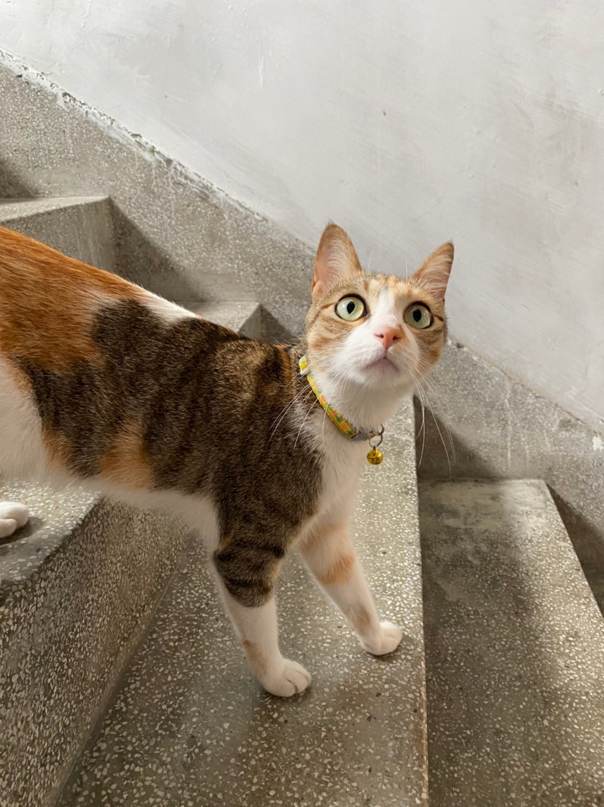

你的貓跟你越來越像？科學研究：貓咪行為可以看出主人性格
文章轉載：生活報橘
你是個貓奴嗎？無論乖巧聽話還是冷漠神秘，你是否曾經想過，你家貓主子的個性，可能跟你自己本身的性格有關呢？
寵物行為專家 Lauren Finka 在調查訪問了超過 3,300 名貓咪飼養者後，在美國公共科學圖書館出版的學術期刊《PLOS One》上發表了研究成果。結果表明， 貓主人的性格、養育方式與貓咪的行為甚至健康之間有緊密關聯 。她以心理學著名的「人格五因素模型（five-factor model）」為基準，整理出貓咪行為與飼養者的性格、教養方式三者之間的關聯；
＃盡責性 Conscientiousness
人們對貓咪的印象通常是冷漠、我行我素，但研究指出當飼主在盡責性得分較高時，他們擁有的貓咪通常具有較低的攻擊性、恐懼感或孤獨感， 社交意願也更高，可能表現得更加熱情 。
＃外向性 Extraversion
一位外向活潑的飼主更可能讓他們的貓在戶外活動，然而我們知道許多貓咪天性對習慣的環境依賴度很高，牠們必須跟熟悉的住所、玩具與貓砂盆待在一起才有安全感。在忽視貓咪本身性格的情況下， 飼主與貓咪之間感情可能較疏離 。

＃親和性 Agreeableness & 經驗開放性 Openness to experience
和藹可親、經驗開放性高的人們通常對自己的貓咪滿意度較高。他們飼養的貓咪會顯得 更有紀律 、更可能遵守主人訂下的規矩； 在接觸新環境、新用品甚至學習新遊戲時，積極性也更高 。
＃情緒不穩定性 Neuroticism
情緒起伏大的飼主，通常社交應對技巧和身心健康也較差。他們養育風格可能會嚴厲獨裁。研究結果表明，當貓主人在情緒不穩定上得分較高時， 貓咪的整體健康狀況更糟，行為偏差也更嚴重 ，包含超重等醫學病症，或是高度焦慮、敵意與攻擊性等。
當然這些研究結果還有更深的意涵。「對我而言，這些結果最重要的意義是 提高人們作為動物護理者的責任意識，因為飼養者的一舉一動都可能影響寵物的健康 。」Lauren Finka 說。